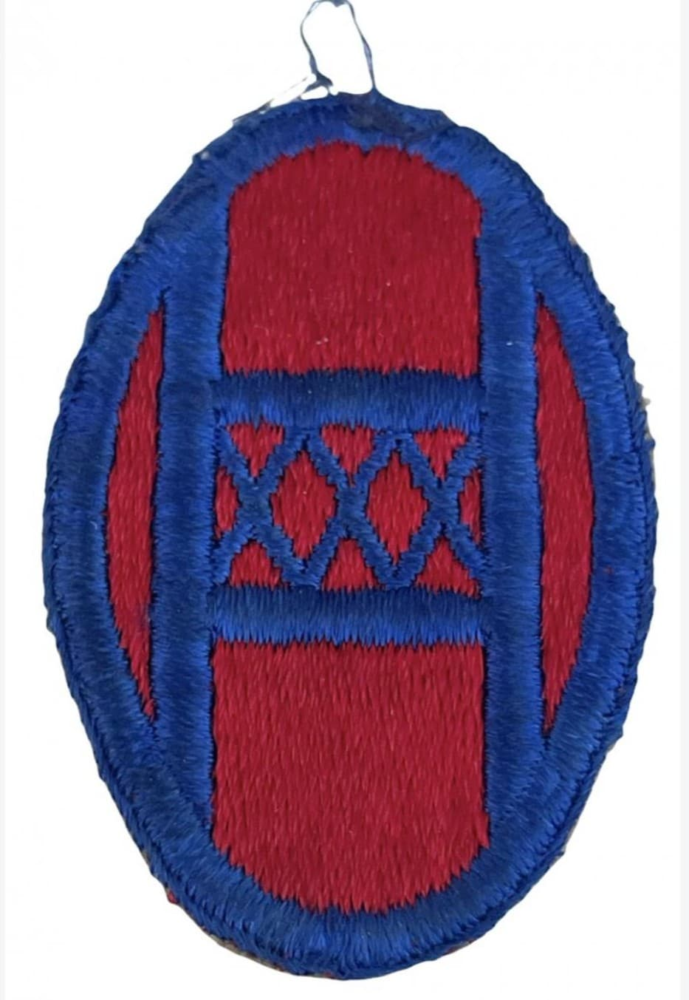

Introduction
Surnommée « Old Hickory », la **30th Infantry Division** est l'une des unités d'infanterie les plus redoutables de l'US Army en Europe.
Qualifiée après-guerre par les historiens militaires de première division d'infanterie du théâtre européen pour son efficacité au combat, elle s'est immortalisée en brisant la contre-attaque blindée allemande à Mortain en août 1944.
Origine et insigne
Créée en 1917 avec des gardes nationaux de Caroline du Nord, Caroline du Sud, Tennessee et Géorgie, la division rend hommage au président Andrew Jackson (surnommé Old Hickory).
L'insigne octogonal bleu comporte les lettres monogrammées **O** et **H** entrelacées avec le chiffre romain **XXX** (30) en son centre. Réactivée en septembre 1940, la division est commandée pendant la campagne européenne par le général **Leland Hobbs**.

1944 : La Normandie et l'enfer de Mortain
Débarquée sur Omaha Beach le 11 juin 1944 (D+5), la division s'enfonce dans le bocage normand et franchit la Vire. Du 7 au 13 août 1944, lors de la contre-offensive allemande à **Mortain** (Opération Lüttich), la 30th Division résiste stoïquement sur la colline 314 à quatre divisions SS blindées.
Encerclés pendant six jours sans ravitaillement terrestre, les hommes tiennent leurs positions sous un feu d'enfer, détruisant des dizaines de chars panzer et sauvant le flanc allié.

Ligne Siegfried, Aix-la-Chapelle et les Ardennes
En octobre 1944, la division perce la **ligne Siegfried** au nord d'Aix-la-Chapelle et effectue la jonction avec la 1st Division pour forcer la capitulation de la ville.
Pendant la bataille des Ardennes (décembre 1944), la 30th Division bloque net le *Kampfgruppe Peiper* de la 1ère Division SS Panzer à Stavelot, La Gleize et Stoumont. En mars 1945, elle franchit le Rhin et pousse jusqu'à l'Elbe.
Bilan humain et héritage
Au cours de ses 282 jours de combat, la 30th Infantry Division déplore plus de **18 400 pertes au combat** (dont environ 3 000 tués).
Six de ses soldats ont reçu la Medal of Honor. La division a été citée pour sa bravoure exceptionnelle à Mortain et a capturé plus de 50 000 prisonniers allemands.
Voir aussi
Page du Musée HOP WW2 – Section Unités & Divisions Célèbres